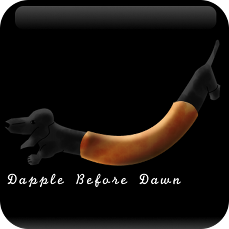

Multitenant Example Application
- Or - Abusing PostgreSQL Schemas
Getting started
-
What's Here?
This sample app has two models, a
tenantsmodel and adogsmodel. This sample app lets a pool of tenants each keep track of their dogs. At dapple before dawn we have three dogs. Sampson (st. Bernard), Maple (Bloodhoud) and Derby (Dachshund)All of the
tenantbase actions have been abstracted into a plugin -
How to Use the Sample App?
- First setup your self a tenant at
tenants/new - Second enter your tenant account, either by
myaccountsubdomain.myurl.com/dogsor by passing the subdomain in the query string astenant - Third create, some dogs at
dogs/new - Finally, repeat steps 1~3 and marvel that the tenants data is not mixed!
- First setup your self a tenant at
-
TODO:
- It's acting as a global state-machine right now! If one user sets the search path that path will apply to all users. (Open it up in two browser windows, one with each tenant, then refresh the
/dogspage for both tenants, without specifying the tenant in the params or subdomain. You'll notice they both report the same data now.I suspect this is because I made everything as a class method in PgActiveSchema. I'll have to review how ActiveRecord does it.
- There are no tests!
- Some rake tasks to manage the plugin migrations and it's
schema.rbwould be nice. I expect to mostly copy Guy - I'm not crazy about that monkey patch in
pg_active_schema.rb
- It's acting as a global state-machine right now! If one user sets the search path that path will apply to all users. (Open it up in two browser windows, one with each tenant, then refresh the